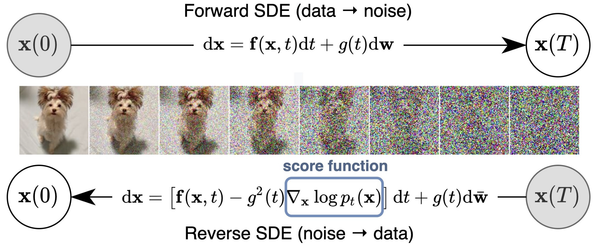

Information
Title: SDEdit: Guided Image Synthesis and Editing with Stochastic Differential Equations
Reference
Author: Seunghwan Ji
Last updated on Oct. 03, 2023
SDEdit#
Abstract#
최근 이미지 생성 분야에서의 놀라운 진화 속도가 계속 되어오고있다. (GAN, Diffusion etc..)
이 중 이미지에 random noise를 추가해 denoising 과정을 학습하는 Diffusion을 통해 high quality의 이미지를 생성할 수 있다.
또, 생성되는 이미지를 사용자가 원하는 방향으로 이끌어내려는 연구 분야도 활발히 진행되고있다 (a.k.a Editing)
하지만, GAN 또는 Diffusion을 포함한 방식으로의 Editing에는 몇가지 단점이 있고, SDEdit은 그런 문제점을 해결해나아갔다는 점을 논문의 핵심 Contribution으로 제시하였다.
1. Introduction#
Abstract에서 말한 Editing이란, 유저가 생성하고자 하는 Guide를 제시하면 모델은 해당 Guide를 기반으로 이미지를 생성해내는 Vision Task를 의미한다.
이때 두가지의 평가요소가 있는데
faithful : 유저의 Guide를 얼마나 잘 따르는지
realistic : 생성된 이미지가 얼마나 real한지
기존의 연구방식은 크게 두가지로 나뉜다.
GAN(Generative Adversarial Network) 기반
Diffusion 기반
이 중 기존에 SOTA를 이룬 GAN 방식을 살펴보면 다시 크게 두가지로 나뉜다.
conditional GAN
특징 : 원본 이미지에서 Edit된 Pair 이미지를 직접 학습
단점 : Pair Dataset이 반드시 필요하고, Condition마다 재학습을 요구
GAN Inversion
특징 : 이미지를 Latent space로 Inversion한 후, Latent vactor를 조작해(manipulate) Edited image를 생성
단점 : 새로운 loss function이 정의되어야하고, condition마다 재학습을 요구
그에 반해 SDEdit은
Pair Dataset이 필요하지 않다.
추가적인 loss function과 재학습이 모두 필요하지 않다.
단 한개의 pretrained weight로 모든 condition의 이미지를 생성할 수 있다.
{kind=link}
{kind=link}
3. Methods#
Pre-Setup
Procedure
DDPM과 달리 SDE의 경우, 완전히 noise화된 이미지 즉, random noise로부터 denoising을 진행할 필요가 없다.
즉, 적절한 \(t_{0} \in [0,1]\)를 지정한 후 denoising process가 가능하다.
 Fig. 233 Image 4#
이 때, 적절한 \(t_{0}\)를 정의해야하는데,
\(t_{0}\) = 1 (i.e. random noise)이면, realistic하지만, faithful 하지않은 이미지
\(t_{0}\) = 0 이면, faithful하지만, artistic한 이미지
를 얻게된다.

Fig. 234 Image 5#
아래는 SDEdit의 적용 과정이다.

Fig. 235 Image 6#
{kind=link}
{kind=link}
4. Experiments#
Score
Metric
realistic : Kid score (lower is better)
faithful : \(L_{2}\) score (lower is better)
그 외 종합적인 평가 지표로 survey를 통한 수치를 제시하였다.

Fig. 236 Image 7#
기존의 GAN 방식들과 비교했을 때 Kid, \(L_{2}\) score 모두 더 좋은 수치를 보이는 것을 확인할 수 있다.
Comparison with GAN (styleGAN-ADA + Inversion)

Fig. 237 Image 8#
SDEdit이 GAN Based model보다 더 자연스럽고(realistic), 유저의 guide를 잘 따르는(faithful)것을 확인할 수 있다.
Comparison with original blending technique
Fig. 238 Image 9#
Fig. 239 Image 10#
기존의 전통적인 방식의 몇가지 blending 기법과 비교해도 더 좋은 성능과 수치를 보이는 것을 확인할 수 있다.
{kind=link}
{kind=link}